In Chapter 5, I discussed the need to divide the network architecture and all your backend services into cleanly segregated pieces through the process of microsegmentation. Microsegmentation is great at having a clean and simple backend process that can be secured thoroughly. Although this process of domain segregation may work well for backend services, the end user–facing systems have to be designed with the requirements and security of the user in mind. These public-facing services are also called edge servers because they happen to live at the edge of your application.
Having a clean and separate edge infrastructure helps in decoupling the domain design of your backend services from the ever-evolving requirements of the end user. Figure 6-1 shows an example of a typical application where the edge is cleanly separated from the rest of the backend microservices.
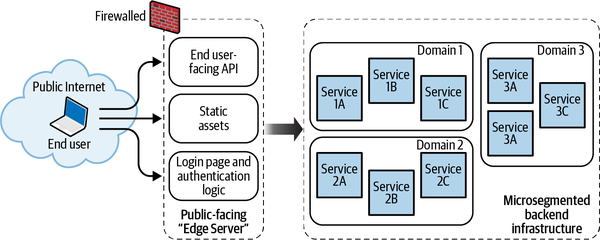
Let me begin this chapter by saying that the services on the public-facing edge servers are inherently less secure than the backend services. For any system, potential threats can be classified into three categories: possible, plausible, and probable. A lot of attacks are possible in theory. In the case of backend services, since you may already have controls that prevent attackers from penetrating the perimeter of your system, a significantly smaller subset of threats ends up being plausible and an even smaller subset ends up being probable. As a result, security professionals can focus on the plausible and probable threats to reduce the aggregate risk of the application.
The edge server is connected to the wider internet, making it fair game for malicious actors around the world. Its public visibility increases the likelihood that seemingly unrealistic threats may be realized. Therefore, it is harder to distinguish between possible and probable threats for edge servers. Security professionals are forced to combat every possible threat, making it more difficult to develop controls at the edge of the network.
It is also hard to implicitly trust any incoming requests at the edge since these calls originate beyond the context of your application. This means that each request has to be independently authenticated and checked against an access control policy in order to be allowed. This, as mentioned in previous chapters, is called zero trust security. While zero trust security is indeed an important security concept, it adds a significant overhead on microservices that are supposed to be lean and focused on the one issue they are responsible for, the single-responsibility principle (SRP).
The edge application can be divided into services that require the identity of the calling user and those that do not. The security needs for these two sets of services may be quite different, resulting in different designs and the use of different AWS systems in their implementation. Generally, unauthenticated edge services that distribute static assets such as media content, images, and scripts (called content delivery networks or CDNs) may not require the identity of the calling parties.
By definition, a cleanly isolated backend service should never be accessible from the public internet directly. The only two ways to get to the production backend services are by using the following:
This chapter shows you how good edge-services design can take advantage of the security architecture that AWS supports. Your application code can focus more on business logic while taking advantage of the AWS Shared Responsibility Model (SRM) to maintain security for the application’s edge service. In particular, this chapter will demonstrate in detail:
How AWS API Gateway allows you to implement authorization and authentication mechanisms around your resources without violating the single-responsibility principle
How AWS CloudFront and other edge mechanisms allow you to implement detective and preventive controls around your CDNs
How you can incorporate encryption processes at the edge to ensure that the remainder of your application does not have to worry about safeguarding data
How you can identify and prevent some of the most common attacks that edge systems routinely encounter over the internet
How you can easily deploy approved third-party applications for security processes
Modularizing and splitting a large application into domains is akin to slicing a pie into smaller pieces. There may be many ways to split a large monolith application. The API-first design methodology is a popular design principle used for exposing microservices to end consumers.
For example, let’s say your application is a digital bank that offers cash advances through a credit line. Consider a situation where you have a mobile app that needs to show the user their available balance. Your backend process may be complicated as you identify which balance needs to be shown to the user based on the user’s available credit, pending transactions, and so forth. However, the end user should not be affected by this complexity. All a user cares about is their balance.
API-first design works to decouple backend services from frontends. With an API-first approach, the frontend can also start development by substituting a mock response for the backend service. Figure 6-2 illustrates how a mock backend can start the development of frontend applications while the complex microservices backend emerges.
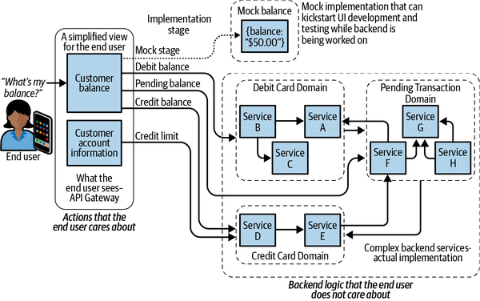
The best edge systems do not simply extend an existing business system’s architecture but anticipate client needs and then design them accordingly, keeping the client’s preferences in mind.
Hiding the complexities of your application and its security architecture from your end consumer is the primary goal of the API-first approach. Using this framework, you can devise security strategies to provide the confidentiality and availability of your application that the end user may expect from your app. More specifically, your API layer can be set up to handle rate limiting, authentication, access control, and firewalls, while your microservices on the backend can handle business logic. Thus, you can expose every service externally with an API designed to hide the internal complexity of your application.
When designing APIs, time is needed to establish contracts. It also often involves more planning and collaboration with the stakeholders who provide feedback on a proposed API design before any code is written. Using mock backend services, API-first design can demonstrate the final application to all stakeholders before the complex backend is designed or deployed. The aim is to make certain the API serves the needs of its end users. Hence, in API-first design, you can start off by drafting the contract first, utilizing the tenets of test-driven development (TDD). For those interested in learning the “art” of TDD, Test-Driven Development by Kent Beck (Addison-Wesley) provides a practical step-by-step explanation of the process.
The API-first approach requires API endpoint designers to first mock the backend service behind each API endpoint. In this way, it is possible to write automated tests on the frontend that validate an API’s behavior against a predefined contract that consumers can agree upon. The consumer and interface will then agree on the data types and schemas of the request-and-response objects.
By shortening the feedback cycle and introducing automated testing through a mock backend implementation, you enable the use of an iterative approach to API design. End consumers can get quicker feedback on the implementation. Any unintended deviation from the consumer contracts is immediately highlighted in the form of a failing automated test.
In API-first design, edge services are deployed to various stages. It is assumed that your edge service goes through various stages in its development lifecycle and your API’s deployment stage determines whether calls to your API reach the microservice application or the mocked backend.
Figure 6-3 shows how your application can have two stages: one for a mock test and another for your production backend. During development and testing phases of the API, the developers can send requests to the mock API that will be designed to respond with responses that will be identical to those in production. Once the testers and stakeholders are sufficiently satisfied by the API design, the API can start using production microservices by simply deploying itself to a new stage.
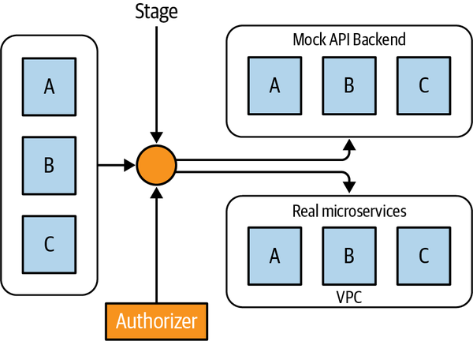
AWS API Gateway is a service that AWS provides for implementing client-facing APIs that can be exposed to end users. While a lot can be said about the scalability of API Gateway, from a domain design perspective, AWS API Gateway helps in cleanly decoupling your backend design perspective from an end-user perspective. This ensures that the backend and the frontend can work independently of each other. This way, you can enforce the SRP on your backend services without compromising on the ease of use for end users.
AWS API Gateway is a fully managed service provided by AWS that allows you to use an API-first approach in a microservice architecture. You can expose either a REST or a WebSocket API to end consumers who can design against it. On the backend, you can easily switch among other AWS services that can handle and process any incoming request.
Figure 6-4, shows how the security components in a traditional monolith can be mapped to an existing prebuilt feature on AWS API Gateway.
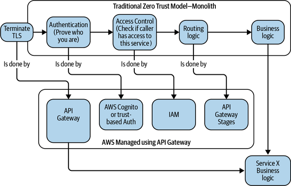
To make things better, all these features are provided to you as part of Amazon’s SRM, making it easy for you to focus on business logic instead of worrying about the scalability and security of these services.
API Gateway encourages API-first design of code by providing you with the tools required to have different stages for testing and deploying new changes to your API. It also comes with the ability to test your API endpoints to encourage TDD.
AWS API Gateway can call AWS Lambda, AWS load balancers, and a variety of other AWS services. AWS regularly updates the list of services that can service an API Gateway request, and this ever-growing list adds flexibility for an architect to design their application without worrying about the backend implementation at design time.
AWS API Gateway also enables the ability to offload Transport Layer Security (TLS) termination to the edge system and provides a secure perimeter without needing to install certificates on each of your systems. This ensures the simplicity of your infrastructure. So, to create an efficient and secure API design using API Gateway, you can follow these steps:
Find all the use cases that the end user needs from your application.
Create an API that services all of these use cases.
Create automated tests that formalize the contract between the end users and the API.
Create a stage where these automated tests can run with mock data from the backend and the tests can be called using an automated testing tool of your choice. (You can use AWS Marketplace tools for this purpose.)
Identify the authentication and authorization requirements that need to be satisfied for this API to run properly.
Include the authentication and authorization logic inside your tests.
Create a second stage that calls the microservice on your backend services using the API Gateway.
Ensure that there is no breach of contract using automated tests.
API Gateway exposes multiple services as a collection. These services collectively share the same web hostname and are called API Gateway endpoints. Depending on the needs of your application, AWS provides you with three different types of endpoints for API Gateway:
Regional API Gateway endpoints
Edge-optimized API Gateway endpoints
Private API Gateway endpoints
This is the default type of API Gateway interface that is used by many services. It was also the first API Gateway service to come into existence. As the name suggests, this is a regional service. So you do not get the advantage of geo-optimization or caching. You have to choose the region in which this service is deployed. Having said that, the service is open to the internet, and by default you get a global URL generated for you once you deploy this service. This API Gateway is perfect for simple applications or server-to-server calls that may be happening against your web server and where geo-optimization is not really required.
Sometimes you need speed, so you call an API that is at a closer geographic location. Other times, you want a failover, so you call the same API from a bunch of different places. Also, some apps only offer global service, so you use them everywhere. In either of these scenarios, you may want to distribute your edge applications to the location of the end user. Edge-optimized API Gateway helps in achieving geographic distribution of your API Gateway.
Let us say you have a globally distributed user base for your application. All your users need to connect to a centralized backend service. In such a situation, an edge-optimized API Gateway endpoint allows all of your globally distributed users to connect to the closest AWS edge location. AWS then assumes the responsibility of private communication between these edge locations and the rest of your cloud resources as part of its SRM. You can see this in Figure 6-5.
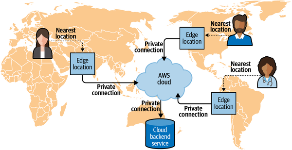
An edge-optimized API Gateway endpoint makes use of AWS CloudFront under the hood. AWS’s network of edge-optimized servers host an AWS CloudFront distribution across the globe and make sure requests go over AWS’s private network instead of the internet before they hit your backend services. This way, you can have a distributed service that is globally available without the need for a distributed backend or a security service that must worry about data traveling across the open internet.
While a majority of your use cases concerning your API Gateway involve requests that come from the open internet, there are times when you may want to service internal requests. These are requests that are made from a different microservice within your virtual private cloud (VPC) and would like to utilize the advantages that API Gateway provides. A private API Gateway lets you service internal requests using API Gateway.
Before I dive into security surrounding the API Gateway, I would like to talk about the high-level architecture that the API Gateway pushes us toward. From a high level, almost all applications will end up having the structure depicted in Figure 6-6.
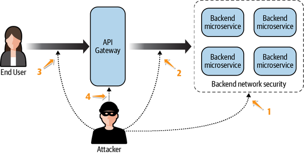
Now that the architecture is laid out, I will talk about four places where security controls may be needed:
Backend services: To start with, the backend services, which do the bulk of the work, need to be clearly and cleanly isolated and secured from any attackers. Since the security controls that are required to secure these backend services are extensively discussed in Chapter 5, I will not go into the details here.
API Gateway integration: Communication between an API Gateway server and the backend services needs to be secure and private. This will be covered in the next section.
API Gateway authorizers: It is also important to make sure that only authenticated and authorized users have access to the endpoints exposed to the end user. On AWS API Gateway, this piece is handled by authorizers, and will be covered in “Access Control on API Gateway”.
Infrastructure security: Finally, the infrastructure that supports this architecture setup needs to be properly secured. This will involve limiting frequent accesses and ensuring proper end-to-end encryption between the various components of your infrastructure. I will talk briefly about the tools available to you in “Infrastructure Security on API Gateway”
Once the API is ready for use by the consumer, the architects have to think about how the edge services can start consuming backend microservices. This process of linking a backend service with the API Gateway is called an integration process. The service that integrates with the API Gateway as part of the integration process is called an integration endpoint. An integration endpoint can be an AWS Lambda function, an HTTP webpage, another AWS service, or a mock response that is used for testing. There are two elements in each API integration: an integration request and an integration response. Integration requests are encapsulations of request data sent to the backend service as requests. AWS allows you to map incoming data into a request body that is expected by the backend microservice that services this request. It might be different from the method request submitted by the client. Likewise, an integration response receives output from a backend application and can then be repackaged and sent to the client. Figure 6-7 highlights this setup.
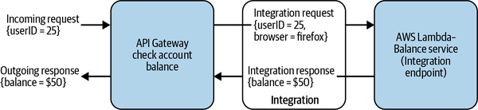
AWS Lambda is a common backend microservice used in microservice applications to provide a serverless backend. If your microservices are mainly written using AWS Lambda, integrating them with API Gateway is a fairly straightforward task. You simply need the name of the Lambda function that your edge API endpoint needs to call as part of the integration, and then add it to the integration.
You may also specify the mappings between the request data and the integration request and the integration response data resulting from the integration. Figure 6-8 shows how a Lambda integration can be specified using the AWS console.
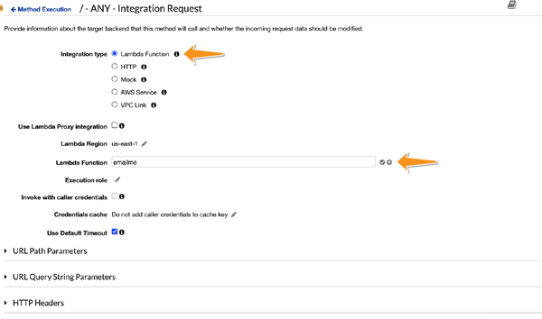
Similar to AWS Lambda, API Gateway has the ability to call any public HTTP endpoints. Setting up HTTP integration is similar to setting up AWS Lambda—based integrations, as seen in Figure 6-9.
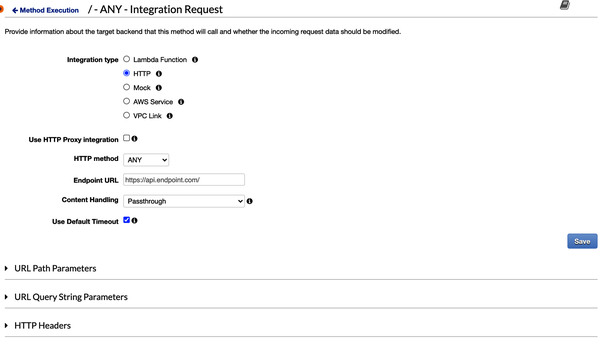
While HTTP integrations work well in calling public HTTP endpoints, from a security perspective, you may not want to expose your entire microservice backend infrastructure to the public internet just for it to be accessible via the API Gateway. This is where VPC links come into the picture. VPC links connect resources in a VPC to edge endpoints that can be accessed via HTTP API routes. If your setup uses Amazon Elastic Kubernetes Service (EKS) or any other Kubernetes setup, you can add a network load balancer (NLB) that can then route incoming requests to the right destination pod.
The NLB can be a private NLB that lives entirely within your private VPC. This way, API Gateway can allow controlled access to your private backend environment. A VPC link also uses security groups to restrict unauthorized access.
For application load balancers (ALBs), you can use a VPC link for HTTP APIs. A VPC link is created within each specified subnet, allowing your customers to access the HTTP endpoints inside their private VPCs. Figure 6-10 shows how you can add a VPC link to your account.
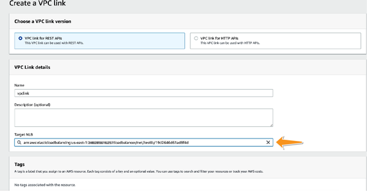
VPC links are immutable. Once created, you cannot change their subnets or security groups.
With VPC links, API Gateway can now be extended to call all of your REST backend services that run on private Kubernetes environments. These services can be running inside your private VPC.
To connect these services to your API Gateway, you can create an NLB and have your Kubernetes cluster as a target group for this load balancer. This setup is really no different than any other Kubernetes setup. For further information on setting up Kubernetes on AWS, AWS provides great documentation.
This setup is highlighted in Figure 6-11.
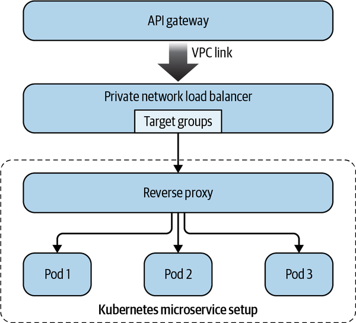
By definition, API Gateway is open to all requests that seek access to your cloud resources. This means that an API Gateway is at the heart of securing your entire infrastructure. While your backend services enjoy a clean isolation and a strong moat, your edge services need to be prepared to handle an array of threats from the outside world. Because perimeter protection is weak when it comes to edge security, it is more important than ever to use a zero trust model in edge networks. It means all edge services will not trust incoming requests until they’ve established trust in the system through some approved methods.
To implement the zero trust model in systems, every request needs to be authenticated and validated against your permission policy. Logic such as this must be repeated, either by distributing across numerous services or by allocating it to a centralized service. Although still possible, several security requirements would have been harder to incorporate into your design without AWS API Gateway. For this reason, AWS API Gateway provides users with predefined frameworks that in turn, simplify the setup process significantly.
From the end user’s perspective, API Gateway supports a zero trust policy through a set of authorizers. Authorizers can be considered as interceptors that check each incoming request and enforce zero trust on each request. Only the requests that satisfy the demands of these preconfigured authorizers are allowed to proceed.
This also indicates that every request must be able to identify itself, ensuring our application against the many different types of phishing attacks. Figure 6-12 shows how an interceptor manages each request made to the API Gateway endpoint. For software developers who have worked with design patterns, API Gateway imitates the facade design pattern that is commonly used in software development. The actual implementation of the access control logic can be abstracted away using this facade.
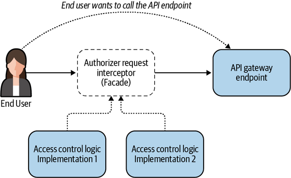
There are three types of authorizers that AWS supports natively, and each of them has a different use case:
API-based identity and access management (IAM) authorizer
Cognito-based authorizer
Lambda-based authorizer
The simplest way of extending access control to AWS API Gateway is to map the identity of the calling entity to a principal (an AWS user or an AWS role) that can be identified by AWS. Once the caller finds a way to tie its own identity to that of an AWS principal, access control becomes easy using IAM policies that are covered extensively in Chapter 2.
So to implement IAM authorization on API Gateway, you will need to perform the following steps:
Identify a principal that the calling application is going to use to make this request.
First ensure that the calling application is allowed to assume the identity that you wish to use for authorization at the API Gateway.
Create and attach an IAM policy that defines how and in what context this principal is allowed or denied calling this method.
Enable IAM authorization on the API Gateway with this policy.
Figure 6-13 explains how IAM authorizer can be used on the AWS API Gateway.
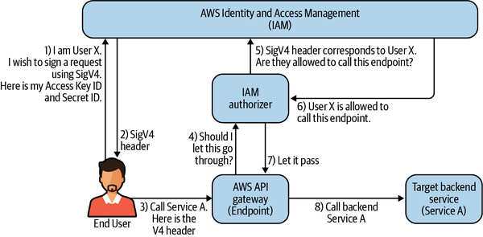
If an AWS user (say, User X) decides to access a service (say, Service A):
User X first downloads their credentials (AWS account ID and AWS secret key).
To validate the API request against the IAM policy, the API Gateway must ask the principals to identify themselves. This can be achieved by signing the request using approved request signing methods such as AWS Sinature Version 4 (SigV4).
The user then includes this signature in its request to the API Gateway endpoint.
The API Gateway endpoint delegates the authentication to the IAM authorizer.
The IAM authorizer has the capacity to read the access policy for the user who has signed this request by querying the AWS IAM service.
It then evaluates the access policy against the request in a manner similar to the way that any incoming request is evaluated (see Chapter 2).
Depending on the result of this policy evaluation, the IAM authorizer decides whether the signed incoming request should be allowed to pass or should be denied.
Since every request has to be separately signed, API Gateway does indeed support zero trust in this instance. However, since this means each calling entity has to be able to sign requests using a principal from your AWS account, it is not a scalable solution for the customer or end user–facing API Gateways.
To set up IAM authorization, follow these steps:
In the API Gateway console, choose the name of your API.
In the Resources pane, choose a method (such as GET or POST) for which you want to enable IAM authentication.
In the Method Execution pane, choose Method Request.
Under Settings, for authorization choose the pencil icon (Edit), choose AWS_IAM from the drop-down menu, and then choose the checkmark icon (Update).
You can then deploy this API to a stage. To make a request, you will have to use SigV4 to make requests:
curl --location --request GET https://iam.amazonaws.com/?Action=ListUsers&Version =2010-05-08 HTTP/1.1 Authorization: AWS4-HMAC-SHA256 Credential=AKIDEXAMPLE/20150830/ us-east-1/iam/aws4_request, SignedHeaders=content-type;host;x-amz-date, Signature=5d672d79c15b13162d9279b0855cfba6789a8edb4c82c400e06b5924a6f2b5d7 content-type: application/x-www-form-urlencoded; charset=utf-8 host: iam.amazonaws.com x-amz-date: 20150830T123600Z'
Any request made using the AWS Command Line Interface (CLI) is automatically signed, and hence it can be executed as long as the calling user has the right IAM access.
AWS Cognito can also provide end-user authentication, to be used against an API Gateway. In order to use AWS Cognito, I will assume you have the initial user-pool setup ready. Let’s also assume you maintain a user pool of all of your users in Cognito. This means every legitimate incoming request can be traced back to a valid user that exists in this user pool.
To use an Amazon Cognito user pool with your API, you must first create an authorizer of type Cognito User Pools. You can then configure an API method to use this authorizer. Figure 6-14 shows how you can add a Cognito authorizer to an existing API endpoint.
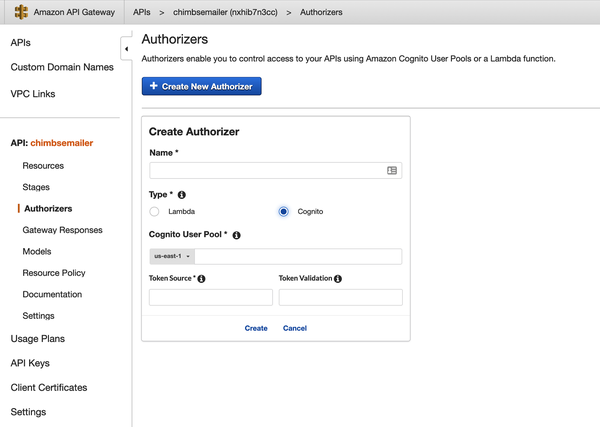
As highlighted in Figure 6-15, once enabled, your API Gateway will delegate the request authorization to AWS Cognito and track user permissions based on its user pool.
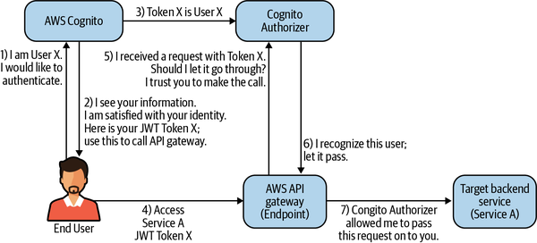
Here’s how it works if a user (say, User X) decides to access a service (say, Service A):
User X will first make a request to AWS Cognito. User X can use any of the authentication methods supported by AWS Cognito to establish their identity.
Once the identity of the caller is established, AWS Cognito responds with a JSON Web Token (JWT).
At the same time, AWS Cognito will synchronize its JWTs with the Cognito authorizer.
User X makes a request to the API Gateway with the JWT.
API Gateway delegates the authorization process with the Cognito authorizer. As mentioned in Step 3, the Cognito authorizer should already have been informed by AWS Cognito of this JWT.
As a result, the Cognito authorizer is able to map the incoming request to an authorized user.
The Cognito authorizer gives the go-ahead for this incoming request, allowing it to access the target backend service—Service A.
Since every call always contains the token, you still achieve zero trust access. The JWT also can be configured to expire, allowing an injection of more security into the system.
The disadvantage of using a Cognito authorizer is that each and every end user needs to be in the Cognito user pool. This may be straightforward for greenfield installations. For established applications, though, it may not be the case since they may already use their own authentication and authorization mechanisms.
The Cognito authorizer gives a scalable but elegant way of achieving zero trust security at the API Gateway level. But it comes with the overhead of maintaining a Cognito user pool, which may or may not agree with the security infrastructure of your organization. Although Cognito is secure, it may be out of the scope of your security project. Moreover, Cognito does not offer an easy way to add custom authentication logic that can be applied to an existing application.
It is likely that an organization has already implemented mechanisms for user validation, authentication, and storage that they do not want to eliminate. The good news is that AWS lets you plug in your own authorization code to replace the one that was managed for you.
In order to implement this custom authorization logic, each API Gateway request is given the ability to call an AWS Lambda function to evaluate its access and privileges. AWS Lambda functions are extremely customizable and can end up calling any other resource or service of your choice. If your organization already has custom access control logic, this authorizing Lambda can delegate access control to your organization’s custom authorization logic. Lambda authorizers require incoming requests to have information that can help them perform their tasks.
This information can be present in the form of the following:
A JWT that can be present and passed along with the request
A combination of headers/request parameters that are passed along with the incoming request
WebSocket-based Lambdas only support the parameter-based Lambda authorizers.
Figure 6-16 shows how you can implement a Lambda authorizer, if a user (User X) decides to access a service (Service A), while Service B provides the authorization service.
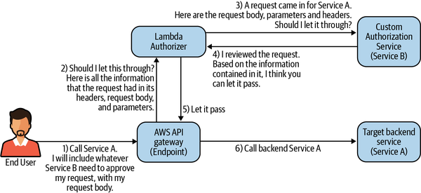
To explain each step further:
User X in this case can call the API Gateway endpoint directly by including whatever information it needs to satisfy the existing custom authentication logic.
The API Gateway then delegates the authorization to an AWS Lambda function in the form of a Lambda authorizer.
This function calls the existing backend service to get a response.
This backend service evaluates the incoming request and responds with either an ALLOW or a DENY response.
The response from Step 4 will then decide whether the incoming request needs to be blocked or can proceed.
The request should carry all required items for access control within itself. For example, this could mean a bearer authorization token in the header or in the request’s parameters.
Given the customizable nature of this authorization method, as long as the API and authorization service can agree on the authorization methods, it is fairly straightforward to implement the end-to-end flow of the request.
In this section, I will talk about a few infrastructure-level controls that AWS offers to you in order to safeguard the API Gateway infrastructure.
API Gateway has limits on the number of requests it can process. Although authorizers can be great at blocking unauthenticated traffic, given that the API Gateway is the first line of defense in many attacks, a sudden burst of requests to the endpoints may be indicative of a wider DoS attack that the API Gateway may be required to prevent. It would be disappointing if the only option that the API Gateway had was to pass the buck to the underlying microservices. Hence, AWS allows API Gateway to rate limit incoming requests. There are two types of rates that are considered while enforcing this rate limit: the sustained request rate and the burst request rate. The sustained request rate is the average rate at which your application gets requests over a long period of time. Online traffic tends to exhibit sudden spikes and seasonality, which is accounted for by this long window of averaging. A sustained request rate is the rate that most developers will consider while designing their systems. This rate is shared across all API Gateway endpoints in an account in any particular region.
The burst request rate is a buffer rate that helps in accounting for a sudden and temporary spike in requests that may push the rate of incoming requests beyond the threshold for a very small period of time (usually less than a second).
For those interested in the algorithm behind this calculation, the burst rate is calculated using a token bucket algorithm. For example, if the burst limit is 5,000 requests per second, the following will occur:
When a caller sends 10,000 requests evenly in a second (10 requests per millisecond), API Gateway processes all of them without dropping any.
If the caller sends 10,000 requests in the first millisecond, API Gateway serves 5,000 of those requests and throttles the rest in the one-second period following this instant.
If the caller submits 5,000 requests in the first millisecond and then evenly spreads another 5,000 requests through the remaining 999 milliseconds, API Gateway processes all 10,000 requests in the one-second period without any throttling.
API Gateway sets a throughput limit on the sustained request rates as well as the burst request rates against your APIs, per region. The burst represents the maximum bucket size in the token bucket algorithm. When there are too many requests in a short period of time and the burst-limit threshold is reached, API Gateway throws back 429 Too Many Requests errors. The client can back off and resubmit the failed requests when it can do it within the throttling limits.
While these limits are generally high (as of this writing, it is at 10,000 requests per second, per account, per region), if they do become a sticking point, as an API developer you can restrict client requests to specific limits for individual API stages or methods. Additionally, you can limit client requests for all APIs in your account by limiting them to individual API stages or methods. This limits the overall number of requests to ensure they don’t exceed account-level throttling limits in a particular region.
In addition to account-level throttling, a per client throttling limit can be placed on each endpoint as part of the usage plan. Since this involves identifying the calling client, the usage plan uses API keys to identify API clients and meters access to the associated API stages for each key.
Mutual TLS (mTLS) is a slightly newer standard that is rapidly gaining popularity among secure systems everywhere. TLS is discussed in detail in Chapter 7, but as an overview, TLS helps validate the server using a standardized handshake and digital certificates signed by trusted certificate authorities for each domain.
With traditional TLS, security measures are performed only by the server; mTLS takes things a step further by asking the client to authenticate every request for each HTTP request that is sent, thus increasing the security of the protocol.
To set up mTLS, you first need to create the private certificate authority and the client certificates. For API Gateway to authenticate certificates using mTLS, you need the public keys of the root certificate authority and any intermediate certificate authorities. These need to be uploaded to API Gateway. Figure 6-17 shows the steps required to enable mTLS for any custom domain endpoint that is served using API Gateway.
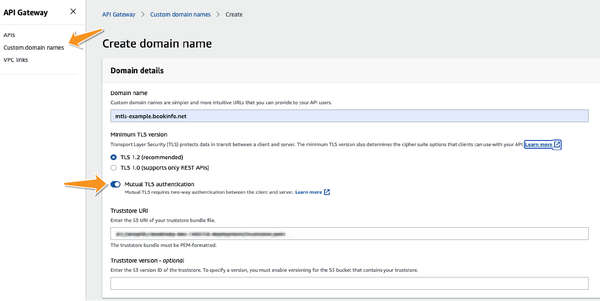
API Gateway allows edge services to provide a decoupled and modularized backend microservice application that is not bound by the whims of end users. However, it has certain costs associated with it, and knowing how costs pile up can help architects in making informed decisions on whether API Gateway is the right tool for them.
The pricing model for the basic API Gateway service is quite straightforward; you are charged for each independent request that is serviced. To make things simpler and fairer, many invalid requests made to the API Gateway may not be charged under this model. Authentication failures, for example, are not charged. This includes requests made without access keys to endpoints that require keys. Furthermore, throttled requests are also charged. Charges will be assessed based on the number of messages transferred as well as the duration of the connection for WebSocket endpoints.
Most additional services, however, incur an additional charge on the AWS API Gateway beyond the basic services. If caching is enabled on the API Gateway, you will be charged an hourly rate for each hour that the cache is stored on the AWS servers. This charge will be applied without any long-term commitment.
If the API Gateway makes cross-region calls to microservices in a different region, cross-region data-transfer rates may apply. Similarly, if the API Gateway calls other AWS Lambda functions—either for authorization or as an underlying service—the calls to these AWS resources will be evaluated separately.
Consider an organization that has completely and securely isolated all of its microservices and separated them from the customer-facing edge requests. However, isolation also comes at a cost. Sometimes, legitimate maintenance has to be carried out on the infrastructure that hosts these services. Alternatively, at times debugging, tracing, and other database-related development require authorized developers to have access to these isolated services.
Bastion hosts are used by your internal developers, administrators, and other users to perform maintenance tasks directly on your private infrastructure. Bastion hosts are generally used for ad hoc access, performing maintenance actions around internal services that cannot be accessed from the public internet.
A public internet—routed instance of the AWS Elastic Cloud Compute (EC2) can be setup for use as a bastion host. This instance is highly hardened and secured to a point that any unintended service or user cannot penetrate through the security barrier. Security groups and network access control lists (NACLs) can be used for ensuring this setup. You also need to ensure that tampering with any settings of the bastion host requires elevated permissions. After you harden this server, you can make sure that your backend services can be accessed only from the jump box. NACLs can be used to ensure compliance at the subnet level, while security groups can ensure the same at the elastic network interface/container network interface (ENI/CNI) level.
A bastion host may reside in a separate account where only certain users from within your main account can assume roles that can tamper with the settings on the bastion host. This ensures complete isolation of services.
Bastion hosts are deployed within the public subnets of a VPC. A bastion host ensures that packets are never exchanged directly between your private network and your corporate network.
It is critical to block any internet access from the jump box, and possibly, any port that is not a pure SSH (Secure Shell) access port. It is also a good idea to put the host on a VPC that requires VPN tunneling. An auto scaling group can be used to make sure that an instance pool always matches the number of instances you specified during launch.
Bastion hosts can be deployed in their own subnets, and NACLs can be used to restrict access. The advantage of isolating bastion hosts into their own subnets is that if a bastion host ever gets compromised, the administrators can immediately use NACLs to secure the perimeter without much delay.
When you add new instances to the VPC to require administrative access from the bastion host, make sure to associate a security group ingress rule to grant this access from the bastion security group (using security group chaining, as discussed earlier). Further, limit this access to only the required ports.
This part of the network requires special consideration from a security point of view. Attacks that happen on content distribution networks may try to mask the malicious nature of their traffic by mimicking regular production traffic. Because of this, it is extremely hard to discern a malicious user when it comes to users who are not authenticated.
In many situations, the general strategy toward mitigating attacks on content distribution is to have a business continuity plan that will try to make sure that the underlying system can scale. This will accommodate the increase in requests so that the availability of the application does not suffer while an attack is in progress.
Before I get into how to protect your unauthenticated network, I will describe exactly what I am trying to achieve by security in this network.
The AWS-recommended way of serving static files is by using an AWS CloudFront distribution. AWS CloudFront is the Amazon CDN asset management system that helps in caching content at the edge for distribution. Each CloudFront distribution uses an origin, which is a storage location where the static content is stored. CloudFront is a highly available and scalable system. It enables the users to ensure constant uptime and performance without being affected in case of attacks.
CloudFront works by caching your static content across various edge locations throughout the world. A request for a resource will be connected to an edge location that is best suited to handle it based on the end user’s location and current traffic. Often known as global traffic management (GTM), this process can lead to improved app performance. A requested static resource is first checked against the cache of the edge location, and only if it does not exist in its edge cache will a request be made to your origin. This entire operation is abstracted away from the developer as well as the end user, making it easy to implement and deploy.
CloudFront also conforms to the SRM of AWS; you do not have to worry about the infrastructure security of the edge locations, cache, or the communication between the edge locations and your origins. This is handled securely and privately by AWS using its own internet backbone. In this manner, you will be able to focus on your application code without worrying about achieving compliance with distribution of your content. Figure 6-18 shows how different users can connect with a local edge connection in order to access the static content of your application. The edge-optimized API Gateway works in a similar way, and for good reason. Under the hood, edge-optimized API Gateway makes use of AWS CloudFront to distribute content to regions around the globe.
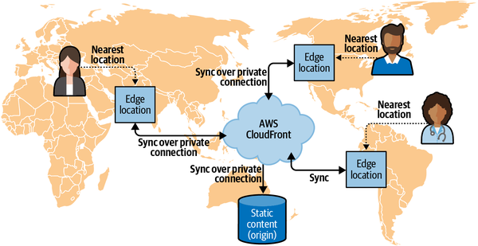
The data repository backing a CloudFront distribution is called an origin. The origin is where content is stored for CloudFront to pick up and cache across all its edge locations.
While CloudFront is optimized to work with S3, it is by no means the only origin that CloudFront works with. CloudFront supports any of the following origins, and the list keeps growing, making it a versatile CDN service that can be easily customized based on your use case:
Amazon S3 bucket that is configured with static website hosting
AWS Elastic Load Balancing load balancer
AWS Elemental MediaPackage endpoint
AWS Elemental MediaStore container
Any other HTTP server, running on an Amazon EC2 instance or any other kind of host
Using CloudFront distributions, you can access your content in any country using a globally accessible domain name. You can also use a custom domain name with CloudFront distributions. Figure 6-19 shows how you can add a custom domain name while creating a CloudFront distribution.
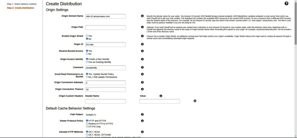
AWS CloudFront only allows secure HTTPS access to its content. So, if you use a custom domain, you will have to add your TLS certificate to the CloudFront distribution for TLS termination. TLS is covered in detail in Chapter 7, but for the purposes of this chapter, it is important to know that a valid TLS certificate must be added to every CloudFront distribution. Figure 6-20 shows the steps required to add a TLS certificate to CloudFront.
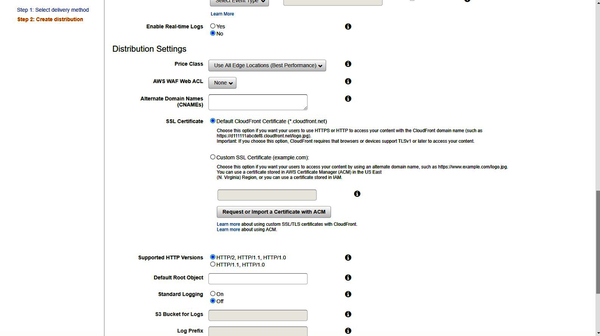
Say you’re using an AWS S3 bucket as the origin for your CloudFront distribution. To ensure protection from attacks and escalating costs, it is important to ensure that access to the static content is locked from every other location except from AWS CloudFront. An important (though not the only) reason for using CloudFront is to safeguard against attacks and escalating costs. However, this is not possible if attackers find a way to directly access the S3 buckets by circumventing CloudFront. This is why you want to make sure that the only resource authorized to access your bucket is your CloudFront distribution, and this access is allowed exclusively for serving static content.
AWS gives you the choice of creating a new identity to be used by your CloudFront distribution. This identity is called the Origin Access Identity (OAI). The OAI is what your CloudFront distribution uses to access resources from the origin. It is important that your service use this identity and disable any other access to your S3 buckets once your CloudFront identity is created. Doing so will render the previously accessible backdoor to your S3 buckets unusable, making them less vulnerable to attacks. Figure 6-21 shows how you can add an origin for your CloudFront distribution.
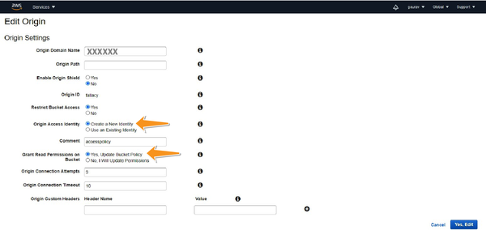
With the rise of the digital economy, a lot of content providers have realized the need to provide premium content. A lot of times, companies like to charge a premium and provide this content to only certain users. Online newspapers and magazines are examples that come to mind when it comes to such a freemium model. In these situations, generally the end user needs access to certain static objects but can be granted this access only after having gone through a basic authentication mechanism. I have already talked about authentication and authorization for services, but remember that static content may also have the requirement to be protected at times.
You want to include a set of digital media content that you would like to serve to end users through your e-commerce website. These videos and graphics are available only to paid customers and can be accessed only once the user has paid for a premium service. You would like to make sure the content is available for a fixed duration of time after the login, but once a certain time duration has elapsed, access to this content is revoked. You would like to maintain this content isolated away from the backend services.
In addition to the use of a trusted service that handles access control on behalf of users, AWS also allows the creation of signed URLs from content-providing object repositories like S3 or CloudFront directly.
The private object repository (S3 or CloudFront) delegates access control to a signing service that acts as an access arbitrator. AWS calls this service a trusted signer. AWS makes use of the digital signatures and asymmetric encryption (discussed in Chapter 3) to verify the identity of users and control access.
In order for third parties to gain access to the object repository, the trusted signer shares an exclusive URL signed by its own private key. This signature can be verified by the object repository. When the object repository sees a request with a valid signature, it allows the request to bypass certain authorization requirements.
Using a signed URL, you can distribute access to private objects for only as long as the requester desires—possibly for several minutes. This sort of access is beneficial when used to distribute content-on-demand to a user, for instance, to provide movie rentals or music downloads. The access arbitration service in a media rental company could possibly be a system that has access to subscription and billing information about individual subscribers and can determine whether the users can access premium static content based on their subscription status.
As long as the end users use the secret, signed URL to access the private objects behind the paywall, these objects can be made accessible to legitimate subscribers.
AWS also enables you to generate longer-term signed URLs for business situations where you may want to share sensitive information with a timestamp on them. An example could be when you share a business plan with investors. You may also share training materials with employees that you would rather redact upon their departure.
I will assume you have the origin and a CloudFront distribution set up along with a trusted signer (say, Signer A). Imagine a situation where an end user (User X) wants to access a private object (Object A). Figure 6-22 highlights the flow of such a request.
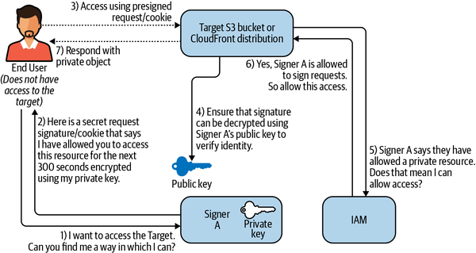
To elaborate on each step:
User X knows that Signer A is the trusted signer. So, it makes a request to Signer A asking Signer A to digitally sign this request.
Signer A signs this request using its private key.
User X uses this signed request to now access Object A from AWS CloudFront or S3.
S3 or CloudFront checks the request’s signature and makes sure the signer is a trusted signer by decrypting this request using Signer A’s public key.
S3 or CloudFront checks IAM to make sure that Signer A is allowed to access this resource.
If Signer A is allowed to access this object, IAM allows the operation to move forward.
S3 or CloudFront returns the private object back to the end-user.
As you might have guessed, what makes a signed URL special is the presence of a signature token in the URL. This signature informs the object repository that some other preassigned service is willing to assume the responsibility of this access, and hence the object repository allows such an access to the end client.
Although both AWS S3 and AWS CloudFront support signed URLs, a signed link can be accessed by anyone with access to the public internet. So, from a security point of view, it might be advisable to use AWS CloudFront whenever you intend to share objects with signed URLs.
Aside from pre-signed URLs, users can also employ HTTP cookies. AWS checks a cookie on the calling host to verify the token instead of checking the URL signature.
Both services provide the same level of security from the perspective of AWS. In both cases, access control is delegated to the trusted signer service, rather than being assessed within the object repository. Thus, either of these methods is acceptable for providing access to your private objects, and architects can choose either of these methods.
If your application likes to use standard REST formats for accessing static objects, using pre-signed URLs may affect their format. In a similar fashion, since pre-signed URLs need to be created on a per-object basis, if your application simply has two tiers (free and premium) or if you want to provide access to multiple files at the same time, signed cookies are a better fit for your use case. Signed cookies are also handy when you have an existing application that does not want to change its existing URLs. On the other hand, you may prefer granular access control to files. Or if you have multiple tiers of membership, pre-signed URLs may be better suited for your application.
To use the design of signed URLs securely to distribute private content, here are the steps to follow:
Store your private objects in a private bucket.
Restrict or control access to content in your Amazon S3 bucket so that users can access it by means of CloudFront but not directly using an Amazon S3 URL. Doing so prevents unauthorized users from bypassing CloudFront and acquiring content by using S3 URLs. You can do this using the OAI.
Create a CloudFront signer. This can be either a trusted key group that you’ve created that lets CloudFront know the keys are trusted or an AWS account that contains a CloudFront key pair.
When a signed URL or cookie is created, it’s signed with the private key of the owner’s key pair. Upon reaching CloudFront, a restricted file will be verified based on the signature included in the URL or the cookie, to confirm that it has not been tampered with.
Viewers require signed URLs or cookies to access your files when you add the signer to your distribution.
If signed URLs are used to determine that the viewer has been allowed to request a file and the viewer has this same restriction via signed cookies, CloudFront uses only the signed URLs.
Though AWS provides many libraries for different programming languages to sign URLs, here is an example from their reference docs that uses the AWS client to sign a URL:
aws cloudfront sign \
--url https://d111111abcdef8.cloudfront.net/
private-content/private-file.html \
--key-pair-id APKAEIBAERJR2EXAMPLE \
--private-key file://cf-signer-priv-key.pem \
--date-less-than 2020-01-01
Output:
https://d111111abcdef8.cloudfront.net/private-content/private-
file.html?Expires=1577836800&Signature=nEXK7Kby47XKeZQKVc6pwkif6oZc-
JWSpDkH0UH7EBGGqvgurkecCbgL5VfUAXyLQuJxFwRQWscz-
owcq9KpmewCXrXQbPaJZNi9XSNwf4YKurPDQYaRQawKoeenH0GFteRf9ELK-Bs3nljTLjtbgzIUt
7QJNKXcWr8AuUYikzGdJ4
-qzx6WnxXfH~fxg4-
GGl6l2kgCpXUB6Jx6K~Y3kpVOdzUPOIqFLHAnJojbhxqrVejomZZ2XrquDvNUCCIbePGnR3d
24UPaLXG4FKOqNEaWDIBXu7jUUPwOyQCv
pt-GNvjRJxqWf93uMobeMOiVYahb-e0KItiQewGcm0eLZQ__&
Key-Pair-Id=APKAEIBAERJR2EXAMPLE
CloudFront verifies the expiration date and time embedded in a signed URL when an HTTP request is received. If a client begins downloading a large file right before the expiration period ends, the download should be allowed to continue even if the expiration period elapses as the transfer is taking place. If the TCP connection gets dropped and the client attempts to restart the download after the download expiration time passes, the download will fail.
One of the most powerful applications of microservices for a security purpose is the ability to run AWS Lambda—based microservices at the edge locations where AWS CloudFront distributions are distributed. This affords you the flexibility to run custom security logic at the edge. With Lambda@Edge, you don’t have to provision or manage infrastructure in multiple locations around the world. Although this has a lot of positive benefits in terms of scalability, speed, and efficiency, I would like to discuss some of the security-related benefits it provides. Two common security-related use cases where Lambda@Edge is useful are:
Inspecting dynamic security headers before passing requests to the origin
Bot mitigation at the edge
AWS Lambdas can be made to run at each edge location in response to four different types of events:
AWS Lambda@Edge allows you to add new headers to the response object to make the site more secure to end users even if it has only static content and is distributed from the edge.
X-XSS-Protection, Content-Security-Policy, and X-Content-Type-Options are some of the headers you can add to your response headers to ensure security. Lambdas can also be used to perform some basic validation at the edge location to protect the rest of your edge services.
Although AWS CloudFront and AWS API Gateway provide you with a great way of protecting your static assets and your microservices from threats on the internet, you may still want to add additional controls around the entry points to your application’s infrastructure. In this section, I will discuss two of the most commonly used controls at the edge of your infrastructure: AWS Web Application Firewall (AWS WAF) and AWS Shield.
AWS WAF protects against known attacks at the edge of your network, and AWS CloudFront, AWS API Gateway REST API, and AWS ALB support AWS WAF as an added layer of security.
The AWS WAF enables you to define certain configurable rules you can apply to your edge services to shield your services from any malicious traffic. This allows the service to focus on business logic and not have to worry about an attack.
WAF is composed of five parts:
Count: counts the request but doesn’t determine whether to allow it or block it, allowing any other rule to make the decision
Allow: allows the request to be forwarded to the AWS resource for processing
Block: blocks the request and the AWS resource responds with an HTTP 403 (Forbidden) status code.
The steps to add AWS WAF to your system are as follows:
Set up AWS WAF in your account.
Create a web ACL for your edge services account.
Attach the web ACL to your edge service. This could include either the AWS API Gateway for your external-facing API or the CloudFront distributions for your CDNs and static content.
Create a set of rule sets or rules that you feel are associated with common exploits and attacks that your application may face.
Attach these rules or rule sets to your web ACL to limit exposure to common web attacks.
Apart from matching on IPs and regex, where rules are applied at an individual request level, AWS WAF allows some advanced aggregate-level filtering:
Amazon also gives you some preconfigured, fully managed rule sets for common attacks that you can use in your applications. This makes it easy for you to hit the ground running when it comes to protecting your application from common attacks. Managed rule sets are maintained by AWS, and new rules are added from time to time to add even better levels of security and block malicious attacks from compromising your edge applications.
However, for systems that want to take it a step further, AWS WAF has extended its WAF offering by allowing for third parties to offer premium protection services through WAF by providing you with possibly more up-to-date or targeted rules. These rules may be purchased at a premium price that is added on top of your usual AWS WAF charges. The Marketplace can be accessed by going to the AWS Marketplace tab, as shown in Figure 6-23.
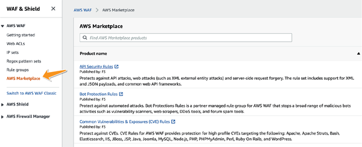
AWS helps defend against most network and transport layer distributed denial of service (DDoS) attacks against your applications. You get the added benefit of comprehensive site protection if you use Amazon CloudFront and Amazon Route 53. DDoS attacks can be sent by individual systems (zombie computers or bots) or by botnets, to flood the bandwidth or storage space of a target.
AWS Shield provides always-on detection and automatic inline mitigations that minimize application downtime and latency, so there is no need to engage AWS Support to benefit from DDoS protection. It is also included in your AWS service arrangement and hence comes at no added cost.
AWS Shield Advanced works in conjunction with AWS WAF to provide additional protection from DDoS attacks but is activated separately. AWS Shield Advanced works with multiple edge services to add the extra protection.
Shield Advanced can temporarily promote your network ACLs to the AWS border to process traffic during a DDoS attack. This means traffic that was supposed to get inside your network and get blocked either way inside your VPC (due to a well-configured NACL) will now be blocked right at the border of the AWS network, thus keeping your application away from any malicious traffic. With the network ACLs at the network’s border, Shield Advanced can handle larger DDoS events. This also protects the internal perimeter and ensures that the DDoS traffic is stopped from entering your VPC. AWS Shield Advanced customers can access real-time metrics and reports and contact the 24x7 AWS DDoS Response Team for assistance during a DDoS attack.
When AWS Shield Advanced detects a large Layer 7 attack against one of your applications, the data retrieval tool (DRT) contacts you to let you know about it. The DRT creates AWS WAF rules and notifies you. You have the right to either accept new security measures or reject them.
Since microservices work as clusters, sometimes the unavailability of one service may not be evidence of an attack. AWS Shield Advanced customizes the scope of its protection by resource groups (called protection groups) so that multiple protected resources are protected as one whole cluster unit. Protection groups are especially useful for protecting against false positives during events such as deployments and swaps.
Due to their nature, microservices generally facilitate horizontal scaling during times of intense load. This is a huge advantage that microservices present and should be part of every architecture design.
During security incidents, if the attack somehow manages to penetrate through your perimeter protection, this scalability can turn out to be a liability since your scaling costs will only be used to fight a malicious attack. So, not only will you be spending extra to garrison your resources against an attack, but you would actually be paying for the added scale that your infrastructure has to support until you can successfully block this attack at the perimeter.
As part of AWS Shield Advanced, AWS provides cost protection in case your AWS resources scale up in response to a DDoS attack. If your protected AWS resources scale up, you can request credits through regular AWS Support channels.
Protecting the system from external attacks is something that every organization should consider, but the additional costs that come along with this protection could be unaffordable for some organizations, and hence a risk-benefit analysis (RBA) is required in some cases. In this section, I have mentioned three AWS-provided edge protection systems (AWS WAF, AWS Shield Standard, and AWS Shield Advanced). Each has its own cost structure. Additionally, I have shown you the AWS Marketplace, which has additional systems that may be able to add extra protection that may not be available in AWS systems.
With AWS WAF, you can incur a cost in one of three ways. Each web ACL you create incurs an hourly charge. Each rule you create for your web ACL is charged on an hourly basis. Apart from this, you also pay per million requests that your application receives regardless of whether they are blocked or allowed. AWS provides a great calculator for calculating your estimated charges.
AWS Shield Standard is available free of cost for all AWS users. AWS Shield Advanced, though, incurs a monthly fee that is charged for every organization. For multiple accounts under the same organization, this monthly fee remains the same.
In addition, AWS Shield Advanced provides a business continuity plan for all its users in the event they are under attack; this can be an attractive investment in case your application cannot afford any downtime, even during an attack. This is like an insurance policy for your infrastructure against malicious users.
A good way of performing an RBA is to weigh the cost of protection measures against a probability-weighted cost of a security incident. Any business continuity measures you may put in place for such an incident should also be factored into this cost calculation. Ironically, your organization could end up spending a lot of money for servicing requests from malicious users if you don’t prevent an attack.
This chapter discussed the need for separate consideration when it comes to the edge systems of your application. Edge systems for microservices should be designed to accommodate the use cases that end clients of our applications encounter. They should never be designed to suit the structure of our backend system. As a result, edge systems benefit from an API-first design methodology that I discussed in this chapter.
AWS API Gateway provides a framework to organize our code in a manner that fulfills the SRP using authorizers to adhere to the principle of zero trust. I also talked about the protections you can place on networks where the end user does not need to be authenticated. These involve the use of CloudFront and signed URLs for individual object access or using AWS WAF and AWS Shield to protect an application from known vulnerabilities and DDoS attacks.
Finally, for services that are not provided by AWS, the chapter gave an overview of what users can use from the AWS Marketplace to add protection at the edge.
In general, the edge system is the most vulnerable of all the systems. It is critical to isolate and safeguard it as much as you can.